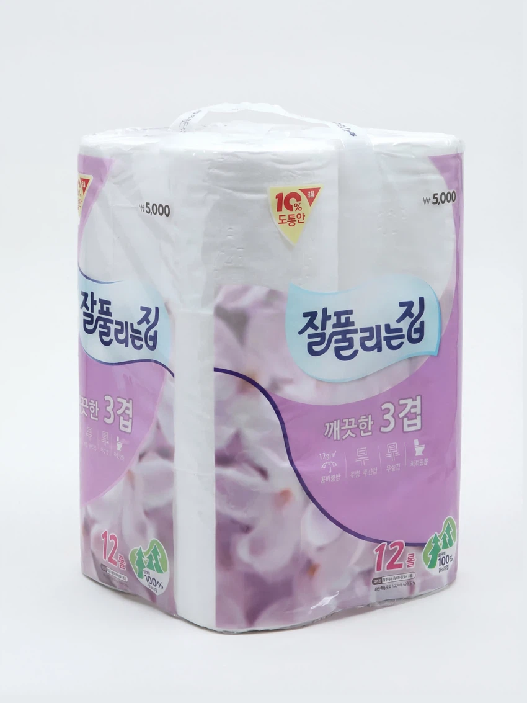
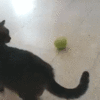

똥닦을 휴지가 없음

똥닦을 휴지가 없음


물로 닦음 안 되나. 안 되면 포도주
어쩔수 없지 인도 메타다
휴지 정도가 무슨 대수이겠습니까
나만 바라보는 거유미소녀 소꿉친구 귀족엘프 개쩌는 서큐버스 차갑지만 나한테만 따뜻한 마망 마왕이 나만 기다리고 있는데
근데 걔네도 똥 닦을 휴지가 없음
그 귀한걸 왜 닦아
깨시가 없는 (Splinter-free) 휴지는 20세기 중반 미국에서 발명되었다...
그럼 그 이전 인류는 가시 있는 휴지만 썼단 거냐...
이쁜노예 부터 사러가던데
기초 물마법 쓰는애 사서 씻겨달라행
일상마법 클린